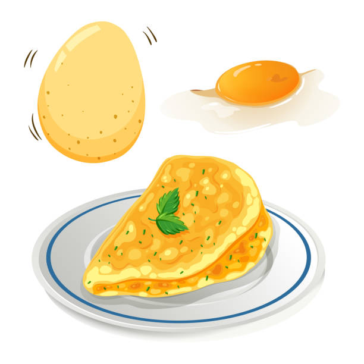

Omelette Recipe

Description
An omelette is usually a nice dish, made up of many cracked egg yolks scrambled together and cooked on a stove.
Although sometimes the egg shells show up, or the omelette itself is less a perfect circle
than a cracked and burnt thing.
Ingredients
- Eggs
- Cheddar Cheese
- Stove
Steps
- Take out three eggs from carton of eggs in refrigerator and place on counter
- Turn on stovetop, place pan, medium heat
- Grab bowl, preferably clean, and crack the eggs
- Using a fork, mix quickly the eggy concoction
- With the stove sufficiently hot, pour the eggy mess onto the hot pan
- Let cook for five to ten minutes, flip when necessary or bored
- Turn off stove, have clean plate ready on the counter. Use spatula to gently pry the omelette off the pan
- Carefully, move plate closer to the pan, and using the spatula, flip omelette onto the plate
- Eat, and be merry